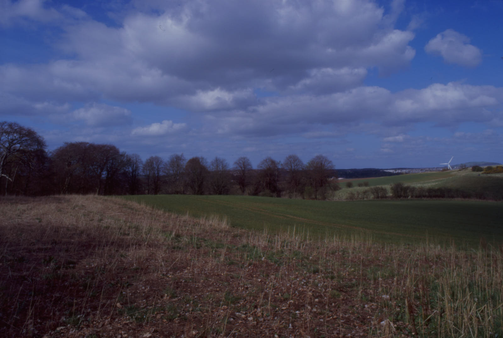
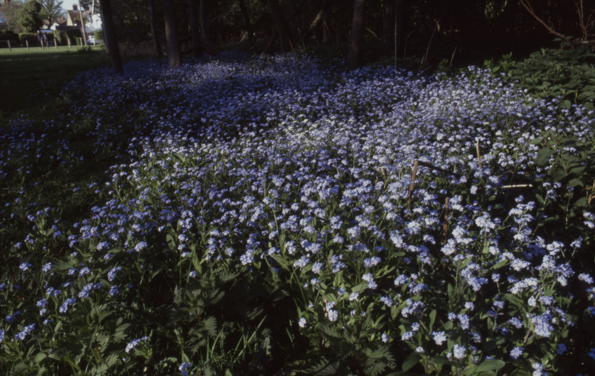
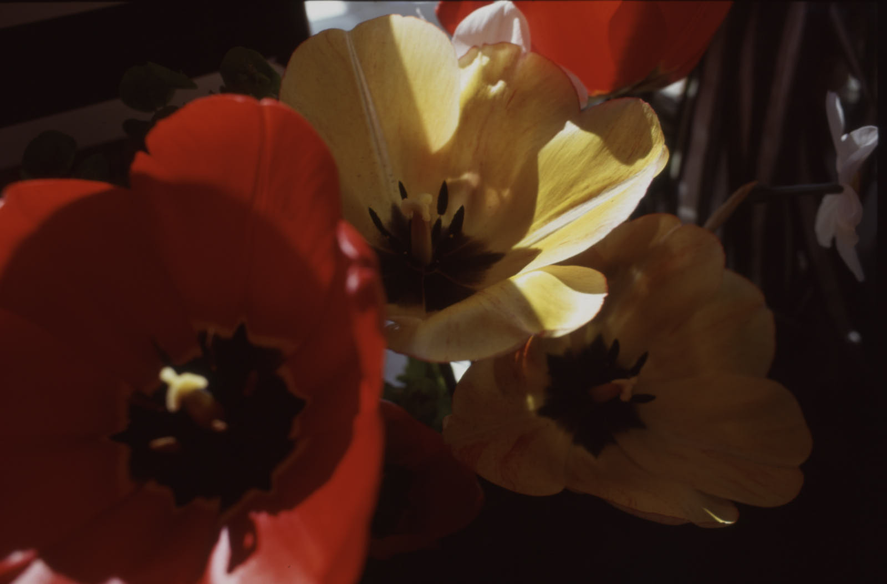

Sunshine walks with E100
Being in the sunshine with Kodak Ektachrome E100  Frame 28. Young tree shoots
Frame 28. Young tree shoots
Kodak Professional Ektachrome E100 is a new, fine grained colour transparency film perfectly suited to bright spring sunshine and the countryside. In good light, I have always favoured Kodak transparency film for colour saturation, so this first time out for me with Kodak’s new T-grain modern slide film was a good exercise.
Soaking up the sunshine at Pattiesmuir
The April sun was splitting the sky, so we went out around Pattiesmuir, a local walking route which winds through rural pathways and copses, offering glimpses of the iconic Forth bridges and over rolling farmland.
 Frame 3. Pattiesmuir
My wife and I have been going out with cameras for a number of years, both of us using Fuji X-series digital cameras usually. Recently, though, I have left the digital behind, and carried only a film camera. The more careful selections I am making is, I think, good for my photography because it slows me down and makes me think more carefully about framing, intent and especially the light. As a result, I do not take as many frames as I would with a digital camera in my hands. I find it hard to finish a roll of 36 in one go, and today was no exception.
Norton Common
I next picked up the camera when, on another sunny day, we took ourselves on a bitter-sweet reflective walk on Norton Common. Earlier that day, we had said goodbye to my beloved Mum and it felt right to take ourselves to this special place in my old hometown. We found deer, and squirrels, sunbeams and forget-me-nots there, all of which seemed to be speaking to us in some way that was comforting.
 Frame 24. Forget-me-nots
We had stayed in a little Air B&B in the pretty village of Great Wymondley, the smaller of the two Wymondleys, not far from the A1. The country kitchen of the old stable block featured a table where we had sat in the sunrays and listened to the voices of the host’s children playing at the big house. There were poppies.
 Frame 30 Poppies
Rosyth
The remaining half dozen frames were made on short exercise trips out the back door and into the park during the continuing COVID-19 restrictions.
Frame 35 Blossom
Blossom is so photogenic, and we are lucky to be living in a place where there is plenty to be found at this time of year.
The camera
The camera I used for this roll was an eBay-sourced Nikon FM of similar vintage to my old FM, whose shutter was sadly condemned last year. It feels very similar but different, not least because the focusing screen is quite mucky, which reminds me every time I frame a shot that this is a substitute for my real Nikon FM. It’s just not the same. I am loving the lens, however, which is the superb AI-s 28mm f/2.8 which gives excellent results across a range of apertures.
Notes
Colour positive (slide) film, cost £14 per roll from Analog Wonderland. Exposed between 4th and 28th April 2020. Sent to AG for processing at £8.98, works out at about 64p per shot.
| Brand | Type | ISO | Format | Exposures | Camera | Lens |
|---|---|---|---|---|---|---|
| Kodak | Ektachrome E100 | 100 | 35mm | 36 | Nikon FM | Nikon AI-s 28mm f/2.8 |
| Frame | Image | Aperture | Shutter | Comment |
|---|---|---|---|---|
| 1. | Golf Course | f/16 | 1/125s | Charles Hill Beach |
| 2. | Crows | f/16 | 1/60s | |
| 3. | Landscape | f/16 | 1/125s | Pattiesmuir, 7th April |
| 4. | Log 1 | f/11 | 1/125s | |
| 5. | Log 2 | f/2.8 | 1/1000s | |
| 6. | Leaves | f/2.8 | 1/1000s | |
| 7. | Mushroom | f/5.6 | 1/125s | |
| 8. | Post top | f/4 | 1/500s | |
| 9. | Pattiesmuir trees | f/16 | 1/125s | |
| 10. | Tank with fence | f/16 | 1/125s | |
| 11. | Sign | f/11 | 1/125s | |
| 12. | Mushrooms | f/4 | 1/125s | |
| 13. | Forth bridges | f/16 | 1/125s | |
| 14. | Forget-me-not | f/4 | 1/1000s | |
| 15. | Gorse | f/5.6 | 1/500s | |
| 16. | The Common | f/11 | 1/125 | Norton 14th April |
| 17. | Blossom | f/5.6 | 1/125 | not sure of shutter |
| 18. | Smoke | f/5.6 | 1/125 | |
| 19. | Forget-me-not | f/5.6 | 1/30s | |
| 20. | Forget-me-not | f/4 | 1/60s | |
| 21. | Canopy | f/8 | 1/125s | |
| 22. | Tunnel | f8 | 1/30s | |
| 23. | Forget-me-nots | f/2.8 | 1/125s | |
| 24. | Forget-me-nots | f/11 | 1/60s | |
| 25. | Forget-me-nots | f/2.8 | 1/500 | |
| 26. | Woods | f/2.8 | 1/60s | |
| 27. | Common lane | f/8 | 1/60s | |
| 28. | Young tree shoots | f/2.8 | 1/500s | |
| 29. | Poppy | f/2.8 | 1/500 | 15th April, Great Wymondley |
| 30. | Poppies | f/5.6 | 1/250 | |
| 31. | Swan | f/8 | 1/125s | Rosyth park, 23rd April |
| 32. | Blossom | f/2.8 | 1/500s | |
| 33. | Blossom tree | f/8 | 1/125s | |
| 34. | Braefoot Lane | f/8 | 1/60s | Braefoot, 28th April |
| 35. | Blossom | f/4 | 1/1000s | |
| 36. | Blossom | f/4 | 1/1000s |